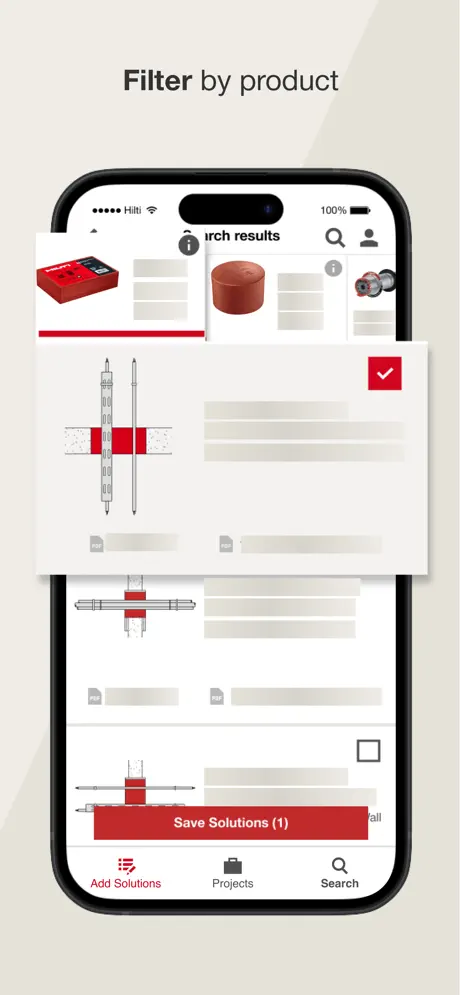

I build mobile apps for people who work where there's no signal.
I'm a senior mobile engineer and technical architect. For {{years}} years I've worked on Microsoft's mobile stack, starting with Xamarin.iOS, then Xamarin.Forms, and now .NET MAUI. Nearly all of it has been field software for construction sites, wind farms and enterprise sales teams. You can download the apps: firestop compliance tools at Hilti, offline labour reporting for Siemens Gamesa, and a field sales app for E. & J. Gallo Winery.
Most of my work is making offline mode reliable. Every change is saved on the device first, synced in order, and safe to retry, so the design itself makes it impossible to lose a record. I usually own the architecture end to end, I work remotely without much supervision, and I set the technical standards the other engineers on the team follow.
all on the App Store
built from one codebase
Xamarin and .NET MAUI
What I own
I write the architecture decisions as well as the tickets. That usually covers the storage and sync model, the threading rules, the module boundaries and the release pipeline. I explain and defend those choices in review, write the first implementation, and mentor the engineers who build on it. For most of the last six years my product owner has been three time zones away, so I'm used to working without anyone checking in on me.
- Systems design: offline data models, how sync conflicts get resolved, permission models, and API contracts agreed with backend teams.
- Releases: App Center, then Firebase App Distribution, then TestFlight. I set up signing and staged rollouts, and a build only moves to the next stage if its crash data looks healthy.
- Helping the team: written review checklists, annotated reference code, and architecture rules that CI checks, so nobody has to remember them.
The work I know best
Apps for people who can't count on a network: construction compliance, wind farm construction reporting, inventory and fleet management, and enterprise field sales.
- Working offline for days without losing data
- Data that has to be correct for regulators and compliance
- Several regional variants built from one codebase
- Old enterprise codebases and framework migrations
Four apps, all on the App Store
Each case study links to the App Store listing and its release history, so you can try the app before you read what I wrote about it.



App Store listing screenshots.
Hilti: firestop compliance for three regions in .NET MAUI
{{co_c}} · Senior Developer & Mentor
One codebase that builds into {{f_regions}} regulatory variants: UL, ETA and DIN. Each has its own approvals data and selection logic, and ships features on its own schedule. The app has an offline library of {{f_approvals}} digitised approvals with full-text search on the device, cloud projects with Owner, Editor and Viewer roles, and a way to request an engineering judgment from the jobsite.
SmartSite SGRE: offline labour reporting for wind farms
{{co_b}} for Siemens Gamesa Renewable Energy
Crews can create, edit and delete activities, tasks and timeframes with no connection. Every change goes into an ordered log and syncs with a key generated on the phone, so a retry can't create a duplicate. We added this to an app that was already live, where a lost timesheet turns into a payment dispute.
Gallo Gateway: a field sales app in Xamarin.iOS
{{co_a}} for E. & J. Gallo Winery
An enterprise iOS app that's been around for years. Reps keep a limited set of favourites offline, and that set has to be complete when they're in a retailer's back room with no signal. I worked on a full redesign for a major version, the international rollout, iBeacon triggers, and moving sign-in to Microsoft Azure while the app was live.
How I pick between .NET MAUI, native and React Native
The most expensive mobile decisions I've seen were made because a framework was easy to hire for. Nobody had asked where the app would actually run. This is how I decide.
Offline enterprise apps
One language from the UI down to the database, few dependencies, and long-term support releases you can plan around. It's my pick when the app is mostly a data system with a screen on top. Most industrial software looks like that.
Hardware and heavy load
I go native for continuous sensor capture, vendor hardware SDKs, tight battery budgets, and any new platform feature that cross-platform libraries don't support yet.
Speed and hiring
It's quicker to iterate on and easier to hire for. The costs show up where JavaScript talks to native code, and in deep dependency trees. I haven't shipped a production React Native app, so this view comes from evaluation and reading. The playbook explains more.
The playbook compares all three on performance, code sharing, ecosystem and five-year maintenance.
Need someone to own your mobile app?
I'm looking for senior individual contributor or subject-matter-expert roles where I'd have a lot of autonomy. Remote US startups and enterprise product teams in construction, industrial, logistics and field service are the best fit. {{workAuthShort}}.